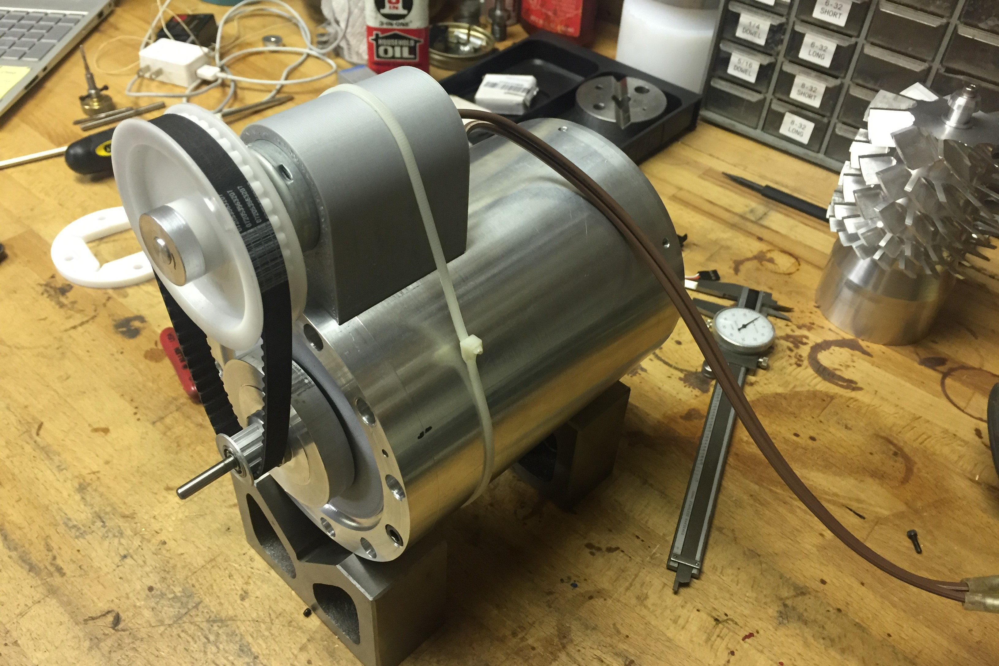
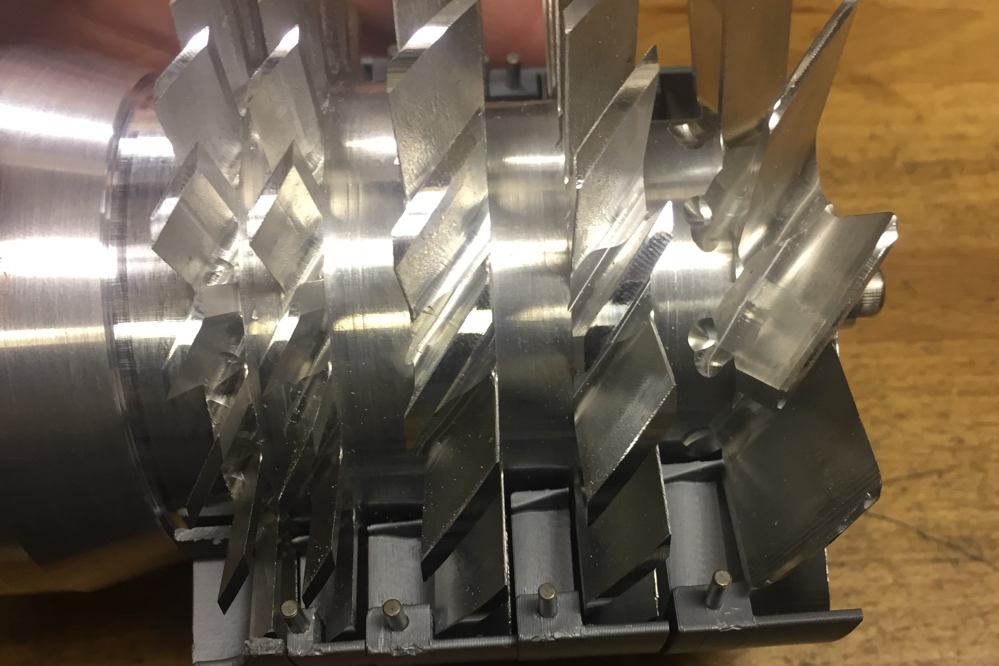

The rotor after machining the blades.
Turbomolecular Pump (Spring 2020)
Spring 2020
A specialized pump for obtaining extremely deep vacuums
The rotor after machining the blades.
A turbomolecular pump is a kind of vacuum pump used to generate extremely deep vacuums from an initial "rough" vacuum. They can take a ~1-10Pa vacuum from a typical vacuum pump and get it down by multiple orders of magnitude. I hope to be able to get to 1 mPa with my pump. My current design uses 5 stages (1 large stage, 2 medium stages, and 2 small stages) and hopefully will run around 30k RPM. The current bearings are cheap full ceramic bearings from Amazon (we'll see if they survive).
jThe original drive method was to place a ring of alternating magnets on the rotor close to a non-conductive plate that makes up the back of the pump. On the other side (in atmosphere) was a aluminum disk that was spun by the motor. The magnets created induced currents in the disk, like an eddy current brake, and this transmited torque to the rotor. This did not work, as will be discussed later.

The rotor with the grooves for the stages turned, before blades were machined.
The first step was to turn the rotor on the lathe to form the spaces between stages of blades where the stators will be (as seen above). After this, the blades were machined one-by-one with a 3-axis Haas VF-2 CNC machine (Thanks to Dan Gilbert at MIT for access to this!). This 3-axis limit meant the blades had to be done individually, and then the part was manually indexed with a rotary table. This meant I had 3 programs, one for each size of blade, and simply ran the program again for each blade. Cycle time for each blade was only about 2-3 minutes, but there are 66 blades, so it took a while. At all stages, great care was taken to maintain concentricity because balance will be critical to the pump not exploding/detroying bearings. I would have loved to use that Haas VF-2 for the rest of the project, but right after this MIT evacuated all their undergraduates, so the rest of the machining work will be done on my Hermle UWF 1000 at home or done manually.

The drive system with the original small motor, belt, and induction disk. The rotor is not installed, and can be seen at back right.
The induction disk was driven by a timing belt that increases the speed by about 4 times, so the motor is placed next to the main chamber, rather than inline. Initially I tried to use a normal brushed DC motor of about 100W, but this was clearly not enough, and it rapidly would overheat when I tried to start it because there is so much inertia in the rotor and that motor is at very low and very inefficient speeds for too long. I then moved to a much larger 1.4kW water-cooled brushless motor. Then powering the motor became a problem. These motors are designed for very high currents at moderately low voltages because they are intended for RC boats and such with batteries. I want to run this off mains power, so I'm working on adapting a power supply to drive the system at about 800W, which will hopefully be sufficient. Since the motor and the speed controller are water-cooled, I also had to build housing for a little centrifugal pump I had and made a little water tank to circulate water around the system. I anticipate most of the heat generation to occur only during startup, with hopefully less during steady-state operation.

The rotor and half of the stators, showing the interaction between the rotor and stator blades.
I eventually 3D printed the stators to go between the rotor blades. 3D printing in PLA is acceptable because the stators are not subject to high stresses. They were printed with solid infill to prevent any voids. Outgassing seems to be minimal with PLA, but it remains to be seen how much 3D printing will influence that, even with solid infill.
The stators in the rotor housing without the rotor.
Using a very limited 10A power supply (so I'm limited to 200W), I was able to get the rotor up to about 7000 RPM in open air, but the induction disk was spinning closer to 20k RPM. This was an unacceptable amount of slip, even for running it in ambient conditions instead of vaccuum. So I decided to build a ferrofluid-based rotating seal, so I can just drive the rotor directly. Ferrofluid seals (literally the only practical use of ferrofluids) work by using a liquid to form the seal. This in theory would work with any fluid, but any normal fluid would simply flow under the pressure gradient until all the fluid leaked out of the seal, and it would fail. Ferrofluid seals use ferrofluid as the sealing liquid, and solve the problem of it flowing away by holding it in place with a magnet and some pole pieces. The flow of the fluid is thus resisted by the magnetic attraction of the ferrofluid. They can obtain extremely good seals, while letting the central shaft spin freely with very little friction.
After building the ferromagnetic seal, the motor now drives the rotor directly, via a flexible coupling. One issue now is that the motor, being a sensorless brushless DC motor, has some trouble starting with so much rotational inertia. It usually takes a few attempts get it running. After that, however, I've been able to run the rotor up to the full 20k RPM, with stators installed, in open air. The much larger problem, however, is that the ferromagnetic seal is not able to withstand a full vacuum. I'm not entirely certain why, I made it to what seemed to be typical dimensions. My guess is it had to do with my inability to properly fill the seal with fluid, which may have prevented the formation of distinct rings of fluid. Having distinct, seperate rings is important because it allows the overall pressure difference to be divided over several seals. If they degenerated into a single ring, then that ring would need to withstand the full pressure difference. I'm not certain how to solve this issue, so for now the project is one hold until I can come up with a good solution.